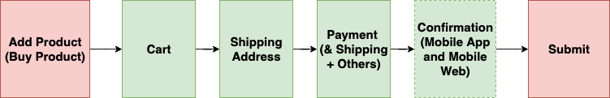

Checkout at Tiki
Vậy là sau hơn 1,5 năm gắn bó và làm việc ở Tiki ở vị trí Software Engineer (SE) cụ thể hơn là Back-End Engineer thuộc Checkout and Payment team. Đây là bài blog đầu tiên của mình sẽ chia sẻ business và technical của một hệ thống lớn E-Commerce ở Việt Nam về các vấn đề Cart Processing, Promotion, Payment, Deal Processing, Order Routing, Order Processing.
Vì bài viết này khá dài nên mình sẽ update thường xuyên, rất mong các bạn thông cảm.
1. Checkout
Có thể hiểu đơn giản Checkout & Payment là một flow đi từ lúc bạn add sản phẩm vào giỏ hàng và thanh toán, đây cũng chính là thành phần quan trọng nhất trong một hệ thống E-Commerce. Dưới đây là checkout flow ở Tiki:

Chính vì vậy Checkout phải đáp ứng các requirement sau:
- Single responsibility, high availability, low latency.
- Scaleable, reuseable, extendable, maintainable.
- Support non-blocking, asynchronous, muli-threaded when needed.
- Well-tested.
- Consistency
To be continued
---#### Cart Processing
Cart Processing là một component cực kỳ phức tạp bao gồm: insert/update/delete sản phẩm, tính toán và apply promotion.
Cart Info
Các bạn có bao giờ bạn add sản phẩm vào giỏ hàng và rất lâu sau đó 1 ngày hoặc có thể 1 tháng bạn vào lại giỏ hàng mà vẫn nhìn thấy sản phẩm trong giỏ hàng vẫn còn y nguyên? Có hai cách là lưu giỏ hàng xuống một RDBMS hoặc NoSQL và ở Tiki đã và đang dùng hai cách trên.
RDBMS: Tiki đã từng dùng MySQL để lưu cart info (product, shipping address, payment info) nhưng do số lượng write và read quá cao khi customer request get cart info hệ thống sẽ tính toán lại và update lại vào DB điều đó làm cho hệ thống không thể scaleable.
NoSQL: Tiki hiện tại đang dùng MongoDB để lưu info của cart. Vì sao Tiki lại dùng MongoDB để lưu thì mình nói trong một bài viết khác.
Promotion
Promotion ở Tiki rất là complex vì không chỉ đơn giản là apply coupon xong nhận được discount mà có thể nhập coupon vừa được discount vừa được free gift, hoặc sản phẩm đó được tặng gift nào.
Khi user request get cart info, hệ thống sẽ lấy ra những tất cả promotion nào đang active đang chạy (Redis or MySQL) và chạy qua một bộ validator để validate cart của customer có đủ điều kiện để apply những promotion không có coupon hay không.
Payment
Có thể nói đây chính là phần quan trọng của Checkout & Payment vì liên quan đến tiền bạc, mà đã dính đến tiền bạc thì có rất nhiều vấn đề xảy ra nếu như hệ thống xử lý không tốt. Vì thế phải đáp ứng đủ các yêu cầu sau:
- Extendable
- Consistency